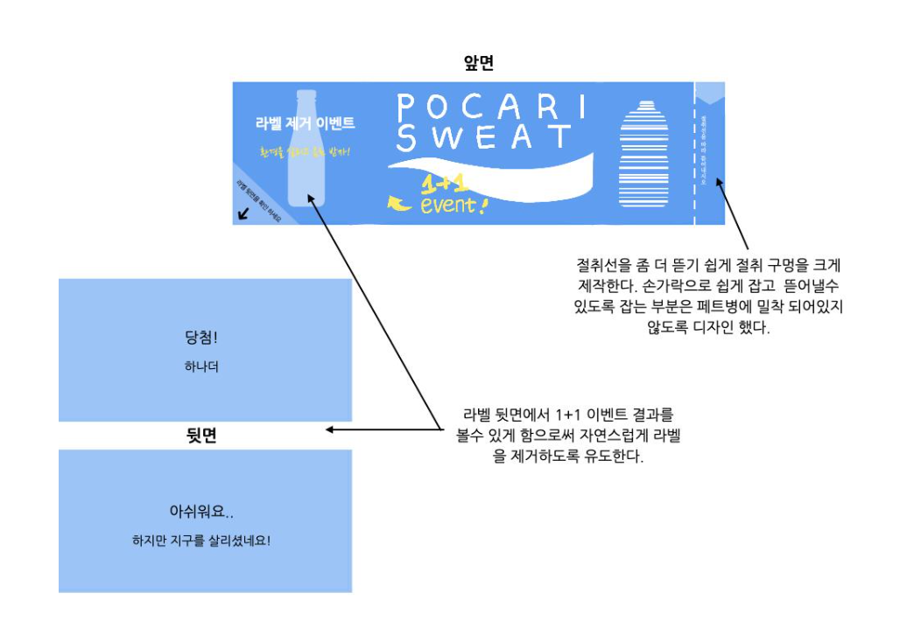
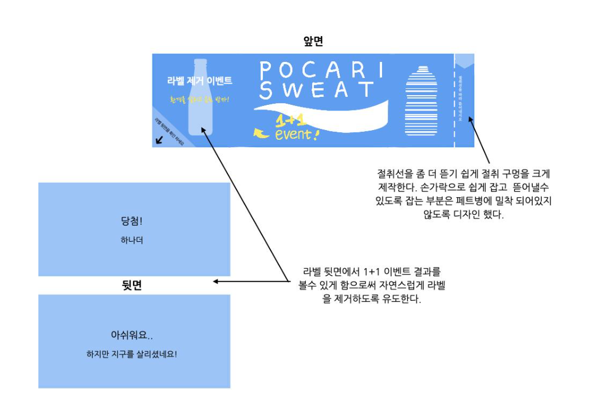

2M 팀프로젝트
2M에는 팀프로젝트를 하였고,
주제는 플라스틱병 라벨이 분리가
되지 않는것이 문제라고 설정하였습니다.
결과물과 학습은 잘 진행이 되었지만 공과사를 구분하지못하였습니다.
공과사를 구분을 잘하였다면 더욱더
성장했을것이라 생각되어 아쉬웠습니다.
되지 않는것이 문제라고 설정하였습니다.
결과물과 학습은 잘 진행이 되었지만 공과사를 구분하지못하였습니다.
공과사를 구분을 잘하였다면 더욱더
성장했을것이라 생각되어 아쉬웠습니다.